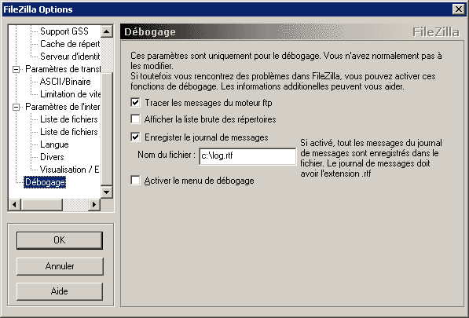

Débogage
Vue d'Ensemble:
Dans cette section vous pouvez activer certaines fonctions de débogage qui sont utiles si vous avez certains problèmes avec FileZilla.

Tracer les messages du moteur ftp:
Quand cette option est activée, FileZilla affiche une grande quantité d'informations supplémentaires dans le journal des messages pour indiquer ce qui s'est passé à l'intérieur du programme
Afficher la liste brute des répertoires:
Si cette option est activée, FileZilla affiche la liste brute des répertoires dans le journal de messages exactement comme il les reçoit du serveur
Enregistrer le journal des messages:
Tout ce qui apparaît dans le journal des messages est consigné dans un fichier sous un nom de fichier donné